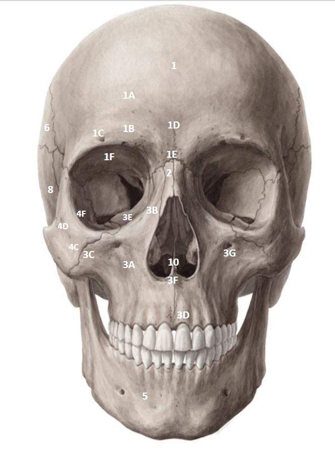
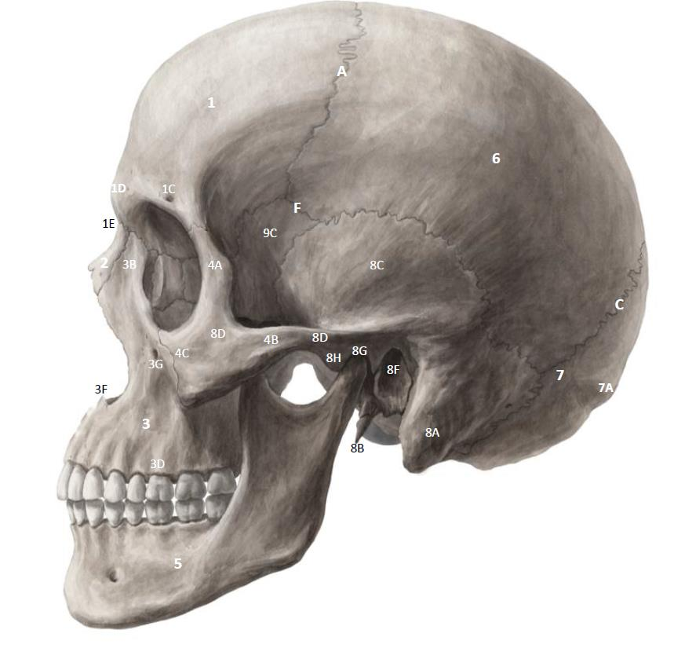
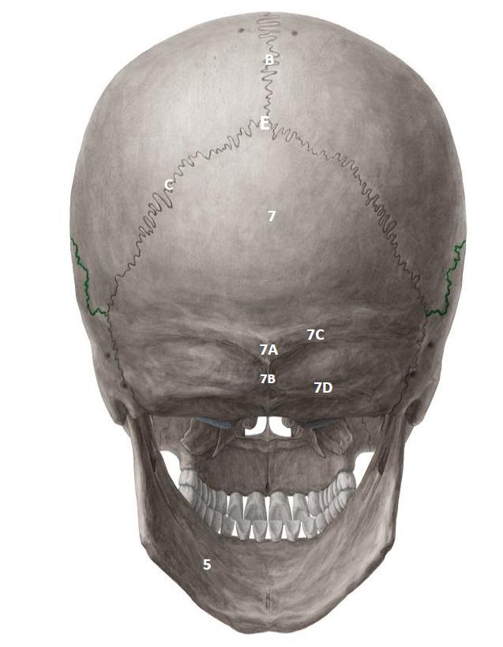
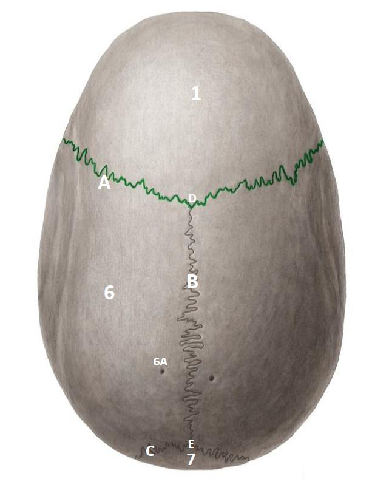
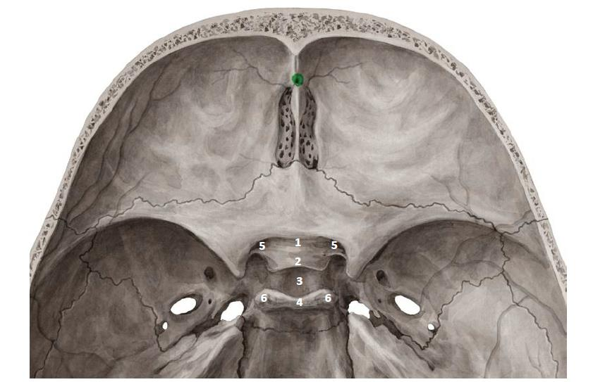
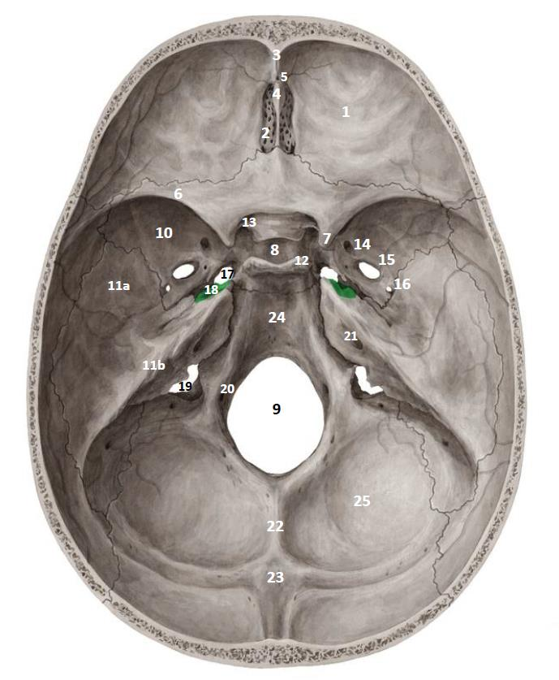
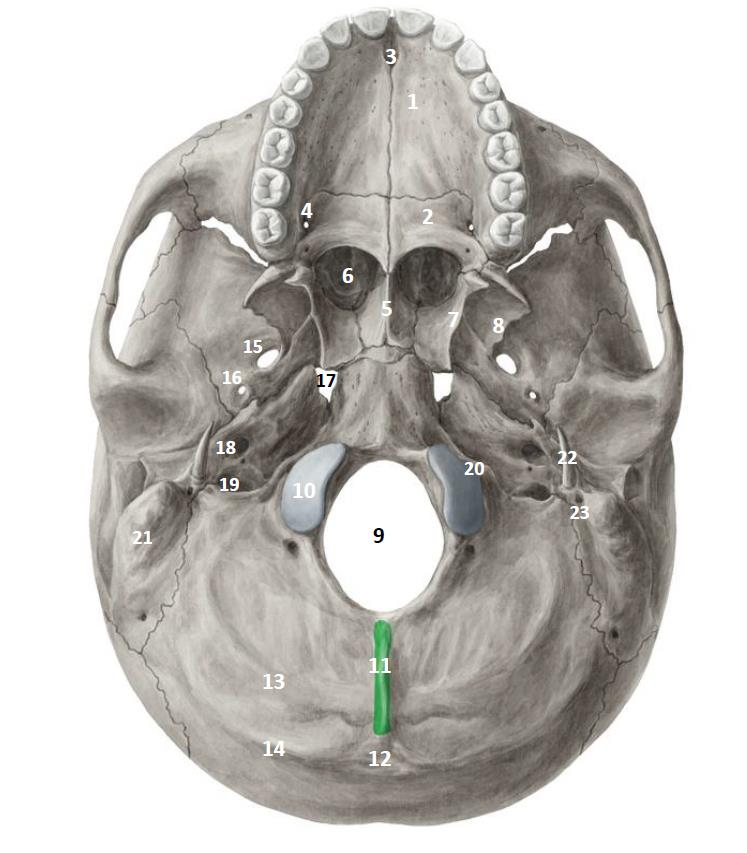
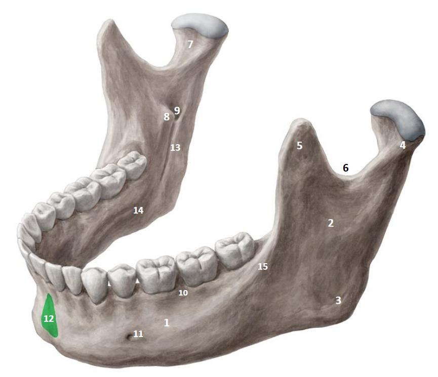

Match each printed number to the key. Select an outlined marker to reveal its structure, or select the image to enlarge it. In Self-test the keys start closed.
Anterior skull · Norma frontalis

Identification key & checklist
Forehead, anterior cranial roof and most of the orbital roof. In side section it curves from the vault into the orbital roof.
Paired bones at the bridge, between the frontal bone and the frontal processes of the maxillae.
Upper jaw; its body lies below the orbit and contains the maxillary sinus.
Cheek prominence and lateral orbital wall.
Lower jaw, below the maxillary teeth.
Rounded prominence above the eyebrow region.
Bony ridges above the medial parts of the orbits.
Interruption in the superior orbital margin.
Smooth midline prominence between the superciliary arches.
Midline point at the frontonasal suture, inferior to the glabella.
Forms the roof of the orbit and floor of the anterior cranial fossa.
Ascends beside the nose toward the frontal bone.
Lateral projection meeting the zygomatic bone.
Holds the upper teeth.
Superior surface of the maxillary body; forms much of the orbital floor.
Midline projection at the lower rim of the nasal opening.
Opening below the inferior orbital margin.
Ascends along the lateral orbital rim to the frontal bone.
Medial portion joining the maxilla near the inferolateral orbit.
Small opening on the outer cheek surface.
Faces into the orbit at its anterolateral wall and floor.
Thin lower posterior bony septum; meets the ethmoid perpendicular plate and articulates with the sphenoid superiorly.
Small bone in the anterior medial orbital wall, near the frontal process of the maxilla and the ethmoid. The nasolacrimal canal drains into the inferior nasal meatus.
Separate bone projecting from the lateral nasal wall. The middle and superior conchae belong to the ethmoid.
Lateral skull · Norma lateralis

Identification key & checklist
Forms much of the cranial roof and upper lateral wall.
Forms the posterior cranial wall and much of the posterior fossa floor.
Forms the lateral wall and part of the middle fossa floor.
The greater wing is visible from the side; both wings contribute to the orbit. The sphenoid articulates with the other cranial bones.
Anterior part of the zygomatic arch; meets the temporal bone’s zygomatic process.
Look on the temporal surface of the zygomatic bone, behind the lateral orbital rim; not the cheek surface.
Broad projection behind and below the ear canal.
Thin spike, medial and anterior to the mastoid process.
Broad flat plate above the zygomatic arch.
Posterior contribution to the zygomatic arch; runs anteriorly.
Ear canal opening just behind the mandibular fossa; also called the external acoustic meatus.
Depression just anterior to the ear canal; receives the mandibular head.
Raised ridge immediately anterior to the mandibular fossa.
Junction of frontal, parietal, squamous temporal and greater wing of sphenoid.
The mandibular head meets the mandibular fossa and articular tubercle; compare the condylar process in Figure 08.
Posterior skull · Norma occipitalis

Identification key & checklist
Midline prominence where the superior nuchal lines meet.
Midline ridge descending from the protuberance toward the foramen magnum.
Paired ridges extending laterally from the external protuberance.
Paired ridges below the superior nuchal lines.
Separates the occipital bone from the parietal bones.
Intersection of sagittal and lambdoid sutures.
Superior skull · Norma verticalis

Identification key & checklist
Runs across the vault between frontal and parietal bones.
Runs along the midline between the parietal bones.
Intersection of coronal and sagittal sutures.
Small opening near the sagittal suture, usually toward the back of the vault.
Sphenoid body and orbital openings

Identification key & checklist
Prechiasmatic groove between the two optic canals.
Anterior boundary of the pituitary fossa, behind the groove.
Saddle-shaped region; the centre marked here is the pituitary fossa.
Bony wall behind the pituitary fossa.
Medial to the anterior clinoid process, at the root of the lesser wing; transmits the optic nerve and ophthalmic artery.
Projection from an upper corner of the dorsum sellae.
Lateral to the anterior clinoid process, between the lesser and greater wings. Connects the orbit with the middle cranial fossa.
Between the floor and lateral wall of the orbit; opens toward the infratemporal and pterygopalatine fossae.
Internal skull base · Norma basalis interna

Identification key & checklist
Above the orbits; the lesser sphenoid wings form its posterior boundary.
Between the lesser sphenoid wings and the petrous ridges; the greater wings contribute to its floor.
Behind the petrous ridges, around the foramen magnum.
Broad surfaces on either side of the ethmoid in the anterior fossa.
Perforated plates beside the crista galli; olfactory fibres cross from nasal cavity to anterior fossa.
Its perpendicular plate forms upper septum. Lateral masses contain air cells, form part of medial orbit and lateral nasal wall, and give rise to superior and middle conchae.
Anterior midline ridge leading toward the foramen caecum.
Upward midline projection continuous with the ethmoid perpendicular plate; attaches to the falx cerebri, a dural fold.
Small midline opening between frontal crest and crista galli.
Sharp ridge anterior and superior to the greater wing.
Medial end of the lesser wing; optic canal medial, superior orbital fissure lateral.
Central bone containing the sphenoid sinus, beneath the sellar region.
Largest opening; connects posterior cranial fossa to vertebral canal.
Lateral middle fossa floor, near rotundum, ovale and spinosum.
Flat lateral part of the middle fossa.
Dense ridge separating middle and posterior fossae; houses middle and inner ear structures. The internal acoustic meatus is on its posterior surface.
At the upper lateral corner of the dorsum sellae.
Paired openings beside the front of the sellar region; see Figure 05.
Anterior to ovale; carries maxillary nerve to pterygopalatine fossa.
Large oval opening posterolateral to rotundum; carries mandibular nerve to infratemporal fossa.
Small round opening posterolateral to ovale; middle meningeal vessels.
Irregular opening by the petrous apex. In life it is filled with cartilage; the internal carotid artery passes over it.
Internal opening at the petrous apex; the external opening is anterior to the jugular foramen in Figure 07.
Between temporal and occipital bones; cranial nerves IX–XI and venous drainage toward internal jugular vein.
Small canal near the anterolateral margin of foramen magnum, superior to the condyle. Cranial nerve XII exits here and then descends in the neck toward the tongue.
Posterior surface of petrous temporal bone; transmits facial and vestibulocochlear nerves.
Midline ridge behind the foramen magnum.
Internal landmark at the posterior end of the crest.
Sloping midline surface from dorsum sellae down to foramen magnum; formed by sphenoid and basilar occipital bone.
Broad depression lateral to the internal occipital crest.
Compare with an unmarked human skull specimen
Find the foramen magnum in the back, then follow the clivus forward and identify the two petrous ridges. Compare with Figure 06.

Schädelbasis1 by Welleschik, CC BY-SA 3.0, unmodified.

Inferior skull base · Norma basalis externa

Identification key & checklist
Forms the anterior majority of the hard palate.
Horizontal plate forms the posterior hard palate; perpendicular plate contributes to the lateral nasal wall, with a small orbital process at the orbital floor.
Midline opening immediately behind the upper incisors.
Posterolateral hard palate, near the last molar.
Midline plate separating the two choanae.
Paired posterior nasal apertures, separated by the vomer.
Thin plate forming the lateral boundary of the choana; ends in the hamulus.
Broader lateral plate; medial wall of the infratemporal fossa.
Large central opening between the condyles.
Smooth oval surfaces beside the foramen magnum; articulate with the atlas.
Midline ridge behind the foramen magnum.
Posterior midline prominence at the superior nuchal lines.
Nearer to the foramen magnum than the superior line in this view.
Runs laterally from the external occipital protuberance.
Large oval opening just posterior to the lateral pterygoid plate.
Smaller round opening posterolateral to ovale.
Medial to the external carotid opening, at the junction around the petrous apex.
Round opening anterior to the jugular foramen.
Irregular opening posterior to the carotid canal.
Near the anterior end of the occipital condyle, not the separate posterior condylar canal.
Broad projection lateral to the jugular foramen.
Slender projection anteromedial to the mastoid process.
Between styloid and mastoid processes; facial nerve exits the skull here.
Mandible · External and internal landmarks

Identification key & checklist
Horizontal tooth-bearing portion.
Vertical plate on each side.
Posteroinferior junction of body and ramus.
Posterior process; rounded head sits above the narrower neck.
Pointed anterior process, in front of the mandibular notch.
Concavity between the coronoid and condylar processes.
Depression on the anteromedial neck of the condylar process.
Small projection guarding the mandibular foramen anteriorly.
Opening on the medial ramus. The inferior alveolar canal runs toward the mental foramen.
Part of the body containing the lower tooth sockets.
Lateral body near the premolars; distinct from the opening on the medial ramus.
Midline chin prominence.
Groove descending anteroinferiorly from the mandibular foramen.
Oblique ridge on the medial body, not the groove on the ramus.
Ridge on the lateral body continuous with the anterior border of the ramus.
Small projections near the midline of the inner chin, above the digastric fossae.
Paired shallow depressions near the inferior border, on either side of the midline.
Cranial nerve exits · Wire stations
Identification key & checklist
Pass a blunt probe through an olfactory opening of the cribriform plate between anterior fossa and nasal cavity.
Figure 06Trace the optic canal between the middle fossa region and orbit, medial to the anterior clinoid process.
Figure 05Identify the superior orbital fissure from the middle cranial fossa and trace it forward into the orbit. V1 is the ophthalmic division of the trigeminal nerve (V).
Figure 05Pass a blunt probe from foramen rotundum into the pterygopalatine fossa.
Figure 06Follow foramen ovale into the infratemporal fossa.
Figure 06Enters the temporal bone through the internal acoustic meatus and leaves the skull through the stylomastoid foramen.
Figure 06 Figure 07Travels with VII in the internal acoustic meatus; it does not exit at the stylomastoid foramen.
Figure 06All leave through the jugular foramen. The spinal roots of XI first enter the skull through the foramen magnum.
Figure 06 Figure 07Exits through its own canal close to the occipital condyle.
Figure 06 Figure 07Trace superior orbital fissure from orbit to middle cranial fossa. Trace inferior orbital fissure from orbit toward the larger infratemporal fossa and smaller pterygopalatine fossa.
Figure 05
Infratemporal and pterygopalatine fossae
Identification key & checklist
Posterior surface of the maxilla.
Figure 02 Figure 07 Figure 08Lateral pterygoid plate.
Figure 07Infratemporal surface of greater wing of sphenoid, around ovale and spinosum.
Figure 06Ramus of the mandible.
Figure 08Gap deep to the zygomatic arch.
Figure 02Inferior orbital fissure.
Figure 05Pterygomaxillary fissure, between posterior maxilla and pterygoid process.
Figure 07Foramina ovale and spinosum. Trace these and the two fissures above with a blunt probe on a teaching skull.
Figure 06Inverted pyramid, broad superiorly near the orbit and tapering toward the palate. Posterior maxilla is anterior, pterygoid process posterior, perpendicular palatine plate medial.
Figure 07Foramen rotundum carries V2.
Figure 06Pterygoid (Vidian) canal carries the nerve of the pterygoid canal: joined greater and deep petrosal nerves.
Figure 06Medial part of the inferior orbital fissure transmits branches of V2 and vessels.
Figure 05Descending palatine canal leads to the greater palatine foramen; the greater palatine nerve reaches the hard palate.
Figure 07Sphenopalatine foramen in the medial wall.
Figure 07Pharyngeal (palatovaginal) canal transmits the pharyngeal branch of the pterygopalatine ganglion and accompanying vessels.
Figure 07
Practical quiz · 20 spotters
Open the numbered specimen and use its original markings to answer.
Figures 01–08: supplied Check list Skull & TMJ, pages 4, 5, 6, 7, 9, 10, 13 and 15. Study cues also draw on the supplied Skull and TMJ Lab Notes.